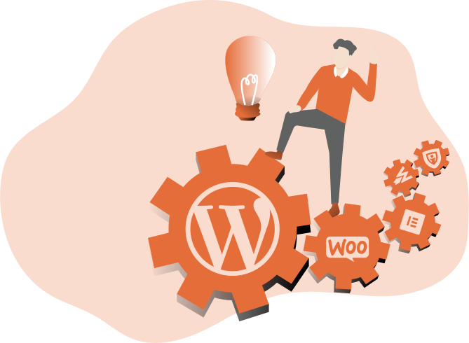

Expert WordPress Maintenance And Support Services For Busy Or Non-Techie Website Owners…
Are you a frustrated non-techie website owner wanting help with WordPress?
Or are you just busy and would like your website managed for you?
Imagine… ALL of your WordPress headaches…gone:
- No more WordPress updates
- No more website editing
- No more content publishing
- No more slow website
- No more security worries
- No more downtime
- No more backup fears
- No more worry, confusion, frustration or annoyance

Is This How You Picture WordPress Utopia Too…?
Imagine… in the coming weeks, months and years…
- Your plugins, themes and WordPress version will be updated weekly when new versions are released (no more security holes in your website)
- You’ll have new pages or posts published for you, text or images added, removed or edited, whenever you like (google loves fresh content as you know)
- Your website will load super fast on any device (giving your SEO a boost too)
- Spammers and hackers are blocked thanks to your rock-solid site security (24/7/365)
- Your website is backed up offsite every day, guaranteed (how’s that for peace of mind?)
- Your website is monitored to ensure it stays online 24/7 (to keep customers, leads and sales coming in)
- You’re updated weekly about how smoothly and awesome your website is performing (you’re kept in the loop the entire time)…
Sounds heavenly, doesn’t it?
That’s what life is like for WPsupporters customers.
If you’re a WordPress website owner and would like to have peace of mind knowing that technical and content updates for your website are taken care of 100%, read on to find out how easy it can be.
Because… as one of the top WordPress support agencies we’ve got the team, expertise and affordable care plans to keep your website maintenance and performance in top shape…